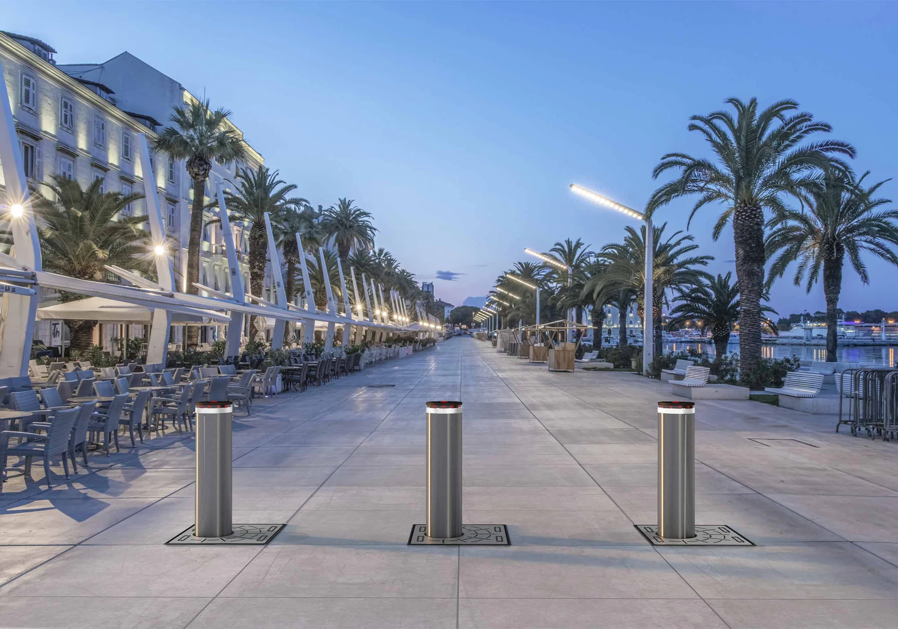
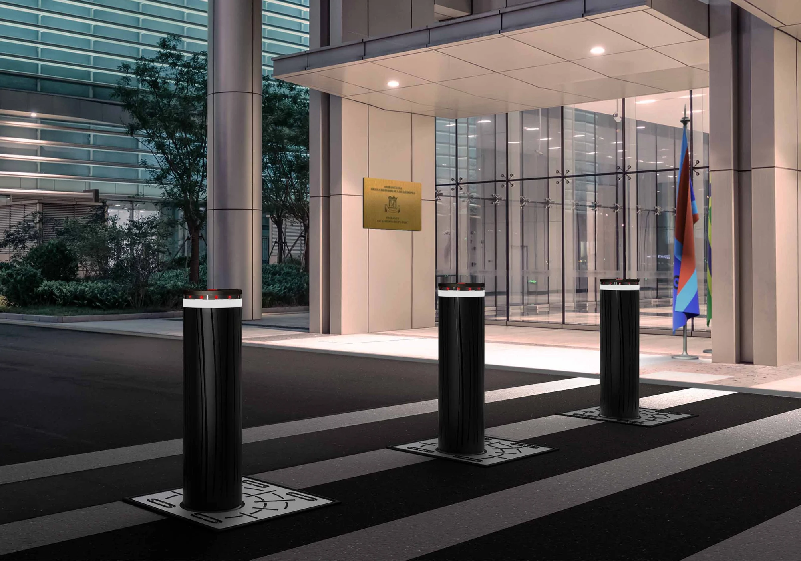
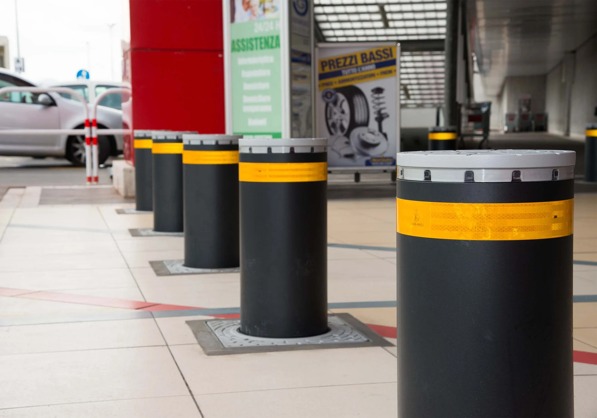
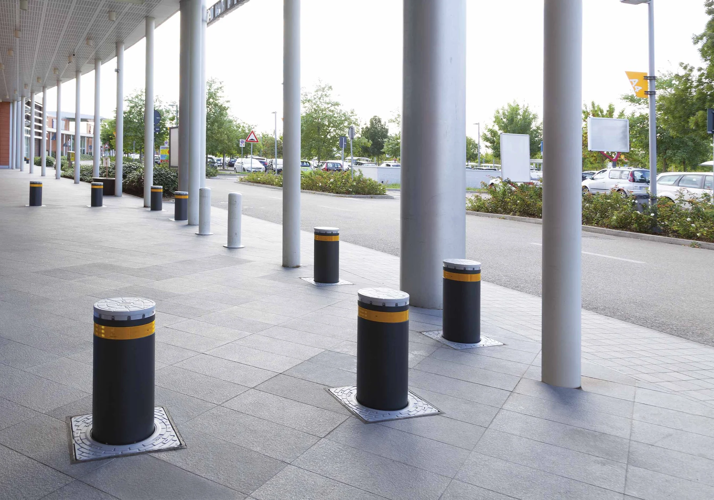
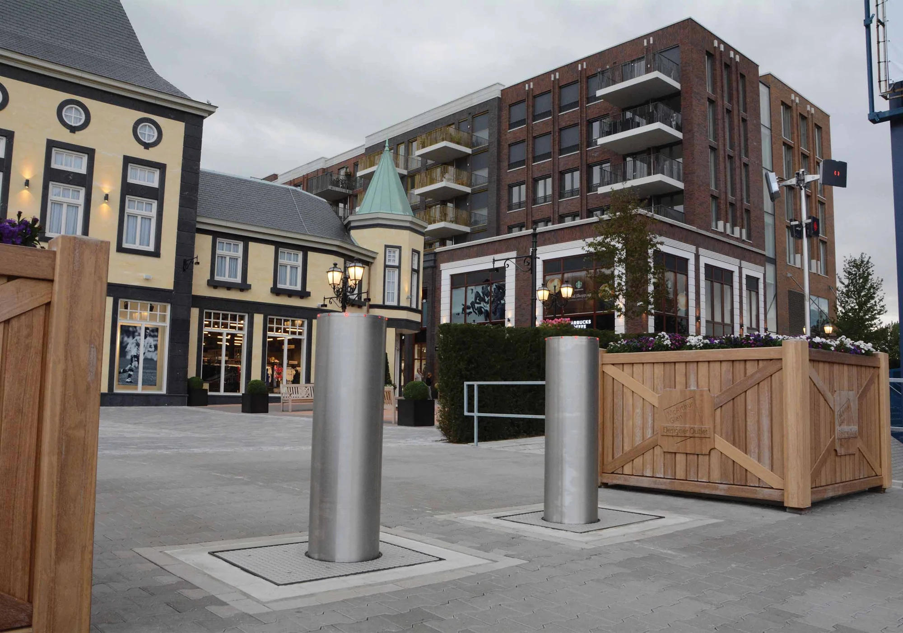
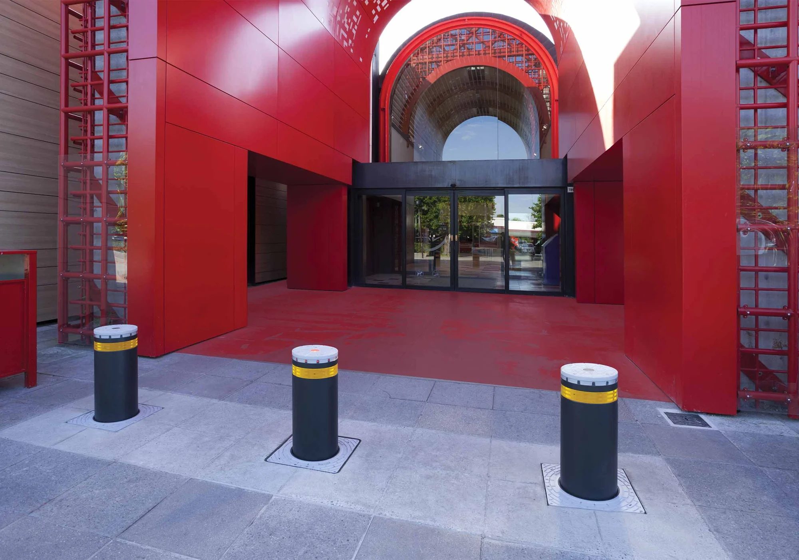
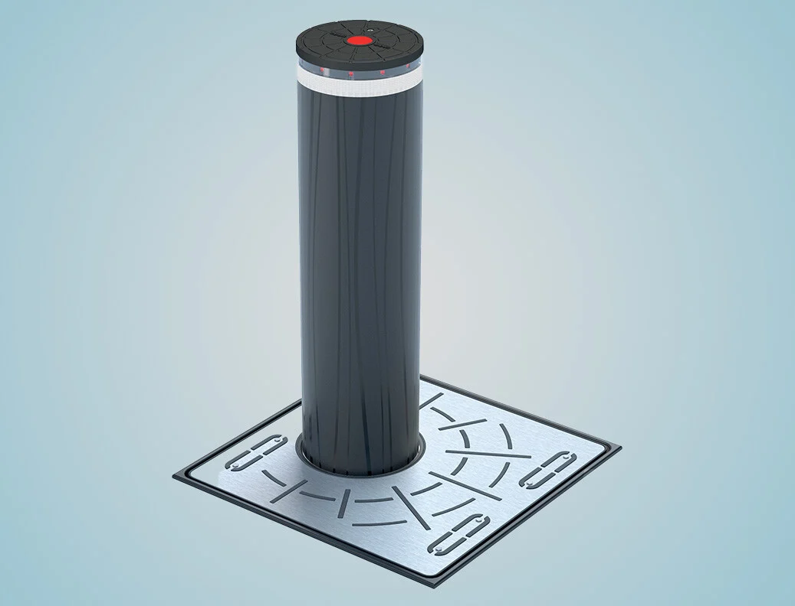
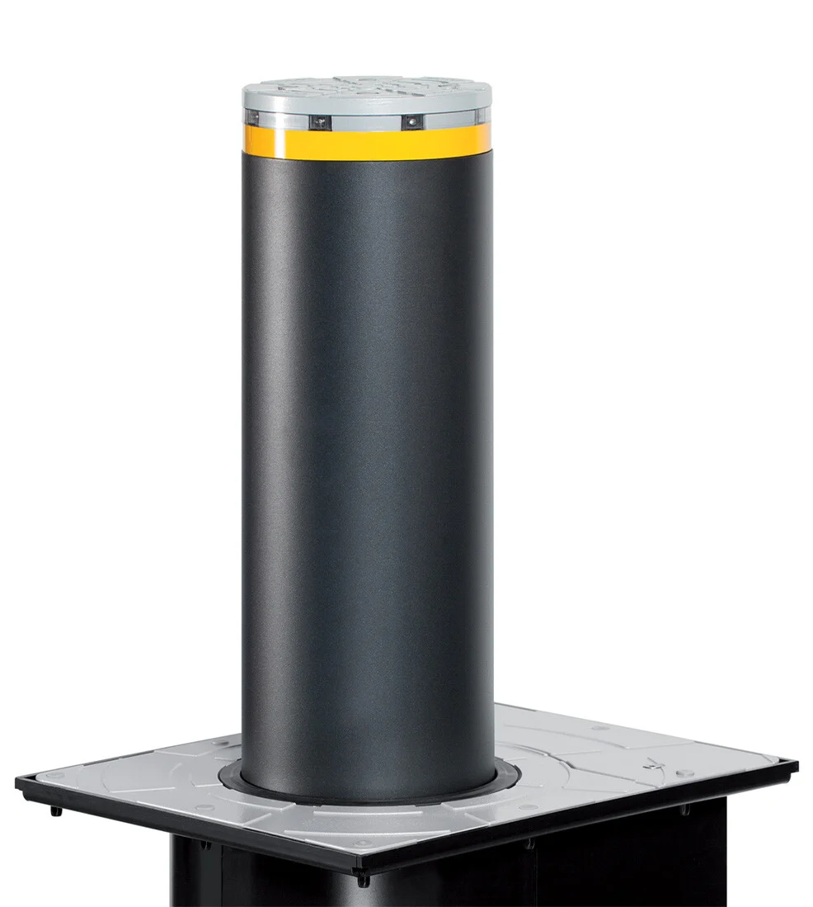
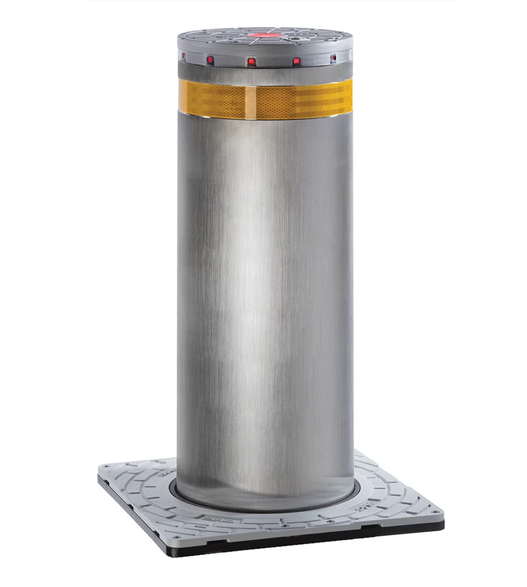

Pilonas retractiles para delimitacion de transito y proteccion contra impactos






Con i dissuasori FAAC puoi gestire il traffico veicolare in modo efficiente, garantendo allo stesso tempo il rispetto dell'estetica urbana. La nostra gamma, infatti, include modelli a scomparsa che, oltre a non interferire con l’assetto paesaggistico, si possono abbassare per dare il via libera alla circolazione dei veicoli.
Per rispondere alla sempre crescente domanda di sicurezza e proteggere il perimetro dei luoghi sensibili, FAAC ha sviluppato degli speciali dissuasori antiterrorismo , conformi agli standard PAS 68, IWA 14-1 e ASTM F2656, che sono in grado di arrestare un camion di 7,5 tonnellate lanciato a 50 o 80 km/h . Questi dissuasori restano operativi anche dopo l’impatto.
Che si tratti di delimitare e regolare gli accessi in zone residenziali, complessi commerciali e aree urbane a traffico limitato, o proteggere il perimetro e garantire la sicurezza di siti sensibili, i dissuasori FAAC sono la soluzione perfetta per ogni esigenza.
Questa è la tecnologia che contraddistingue i dissuasori di traffico e sicurezza di FAAC, progettata per rispondere a esigenze specifiche e offrirti la massima affidabilità.

La tecnologia oleodinamica è da sempre il simbolo dell’eccellenza FAAC e ancora oggi è il nostro fiore all’occhiello. Siamo stati i primi a introdurla, nel 1965, nell'ambito automazioni per cancelli.
Impiegare l'oleodinamica in questo settore richiede un altissimo livello tecnologico e una precisione assoluta nell’assemblaggio.
Questo ci permette di offrirti tutti i vantaggi di questa tecnologia, applicabile in molteplici contesti con prestazioni sempre eccellenti.
Pilonas retractiles para delimitacion de transito y proteccion contra impactos

